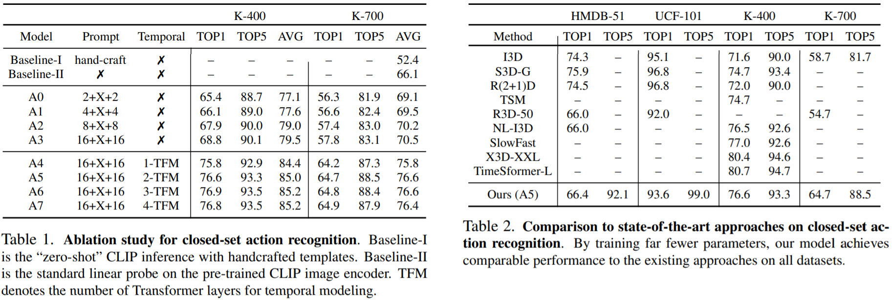
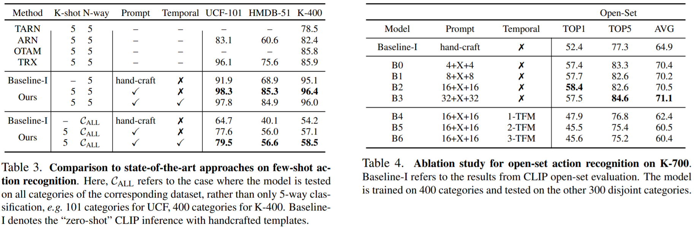

| Visual-language pre-training has shown great success for learning joint visual-textual representations from large-scale web data, demonstrating remarkable ability for zero-shot generalisation. This paper presents a simple method to efficiently adapt one pre-trained visual-language model to novel tasks with minimal training, and here, we consider video understanding tasks. Specifically, we propose to optimise a few random vectors, termed as continuous prompt vectors, that convert the novel tasks into the same format as the pre-training objectives. In addition, to bridge the gap between static images and videos, temporal information is encoded with lightweight Transformers stacking on top of frame-wise visual features. Experimentally, we conduct extensive ablation studies to analyse the critical components and necessities. On 9 public benchmarks of action recognition, action localisation, and text-video retrieval, across closed-set, few-shot, open-set scenarios, we achieve competitive or state-of-the-art performance to existing methods, despite training significantly fewer parameters. |
Results
Closed-Set Action Recognition: Ablation Study (left) and Comparison to SOTA (right)

Few-Shot Action Recognition (left) and Open-Set Action Recognition (right)

Closed-Set Action Localisation Results
Text-Video Retrieval Results

Dataset Splits
We initiate several dataset splits for training and testing, under different scenarios, namely, few-shot action recognition, zero-shot action recognition, zero-shot temporal action localisation.
For details on the dataset splits, please check here.
Acknowledgements
This research is supported by the National Key Research and Development Program of China (No. 2020YFB1406801), 111 plan (No. BP0719010), STCSM (No. 18DZ2270700), State Key Laboratory of UHD Video and Audio Production and Presentation. Tengda Han is supported by a Google-DeepMind Graduate Scholarship. Weidi Xie is supported by the UK EPSRC Programme Grant Visual AI (EP/T028572/1). He would like to acknowledge the generous support of Yimeng Long and Yike Xie in enabling his contribution.
Webpage template modified from Richard Zhang.